| Cadru | Pixeli diferiți | CPU render înainte (ms) | CPU render după (ms) |
|---|---|---|---|
| street-eye-level | 2.358% | 20.99 | 23.09 |
| facades-close | 1.370% | 15.51 | 19.53 |
| decor-lamp-shelter | 6.082% | 15.85 | 21.10 |
| city-aerial | lipsă | — | — |
| taxi-front-three-quarter | 2.884% | 19.18 | 16.39 |
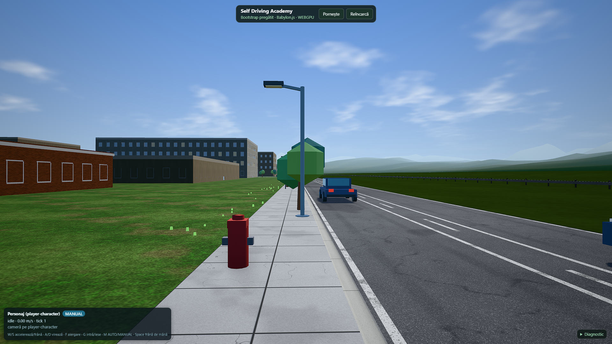
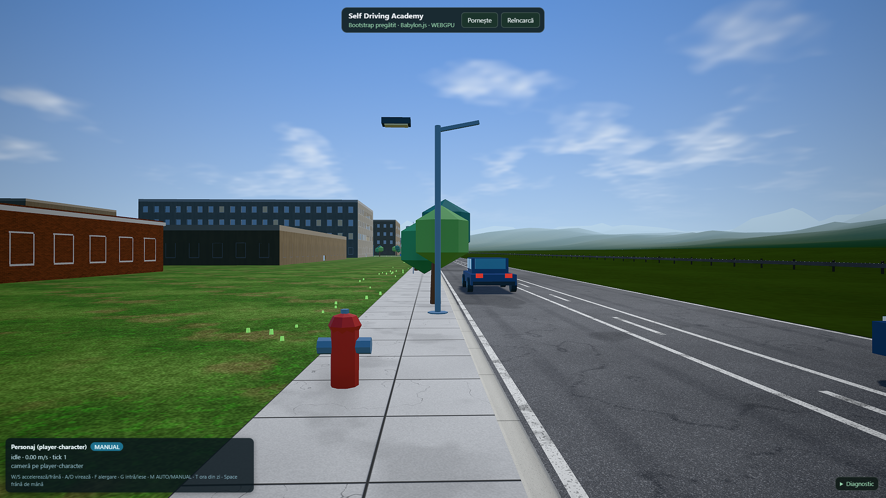
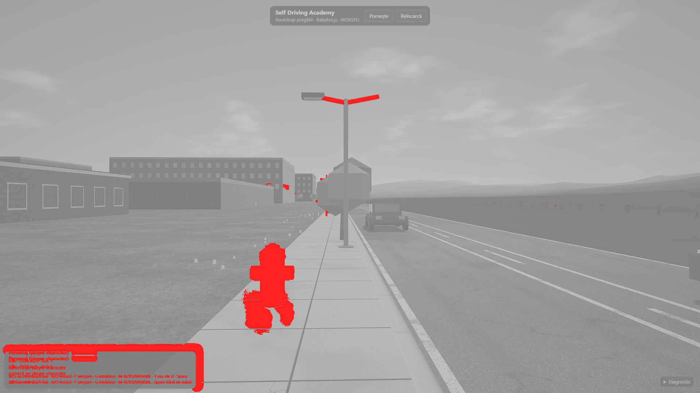
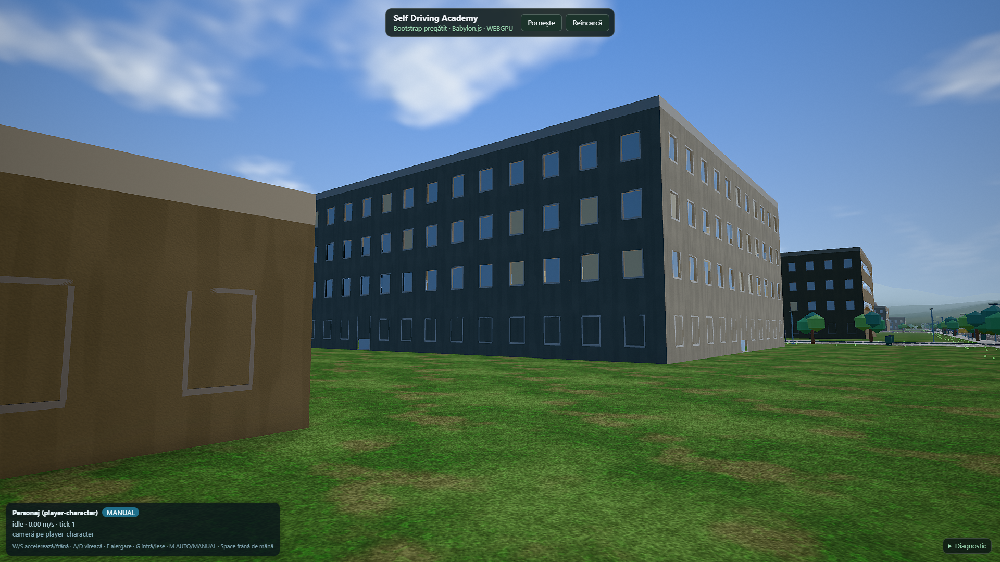
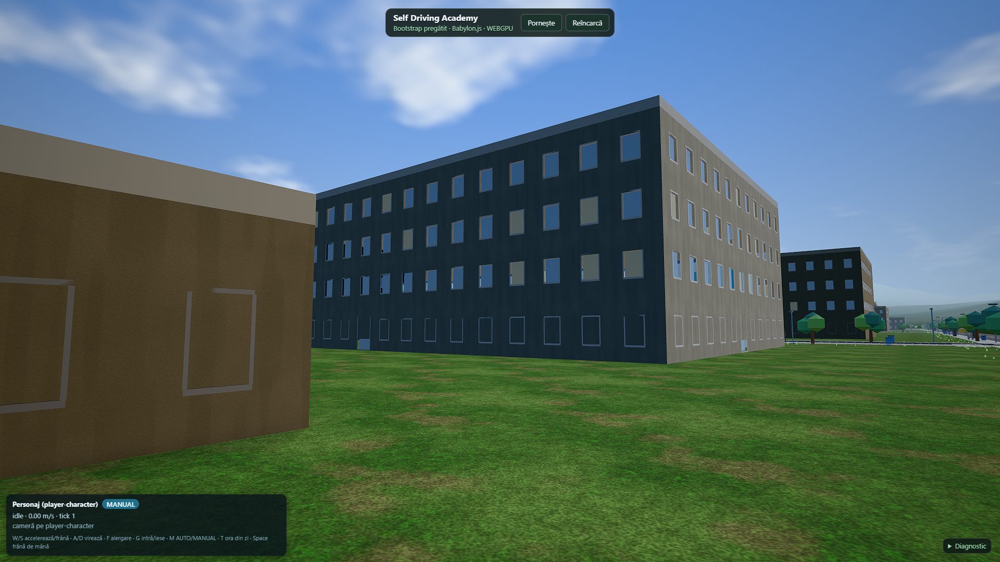
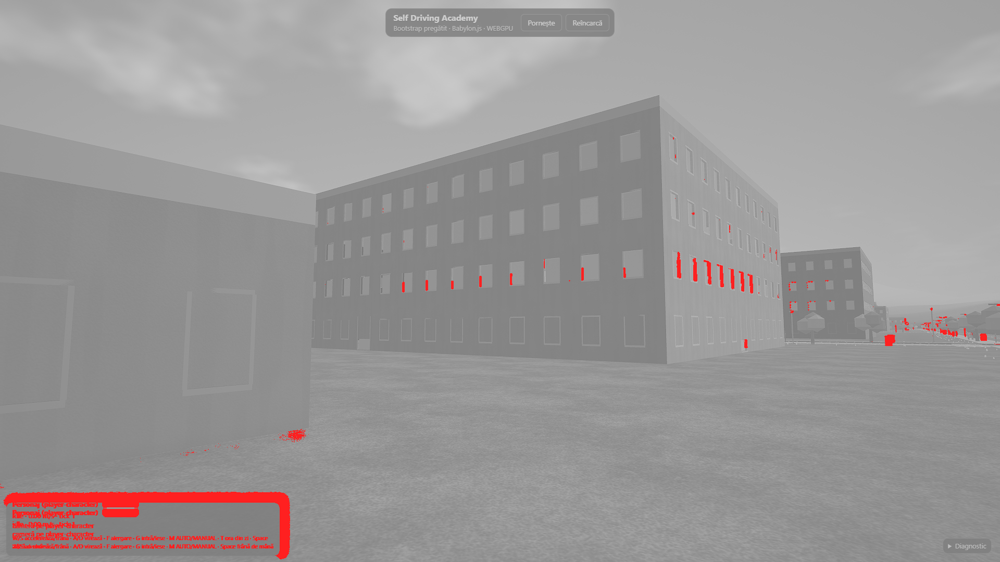
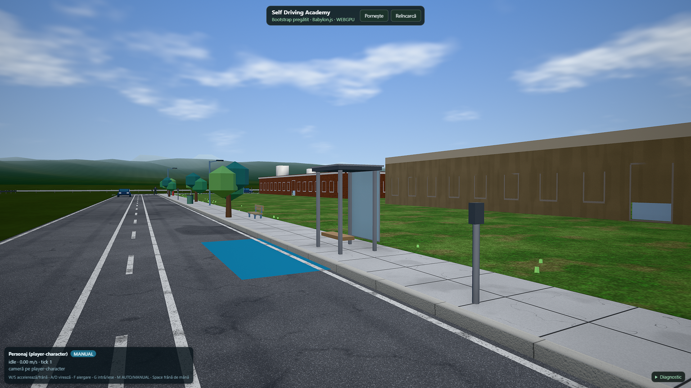
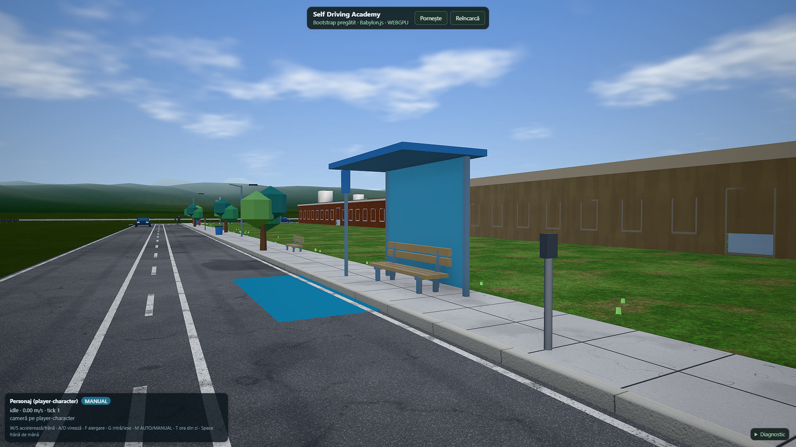
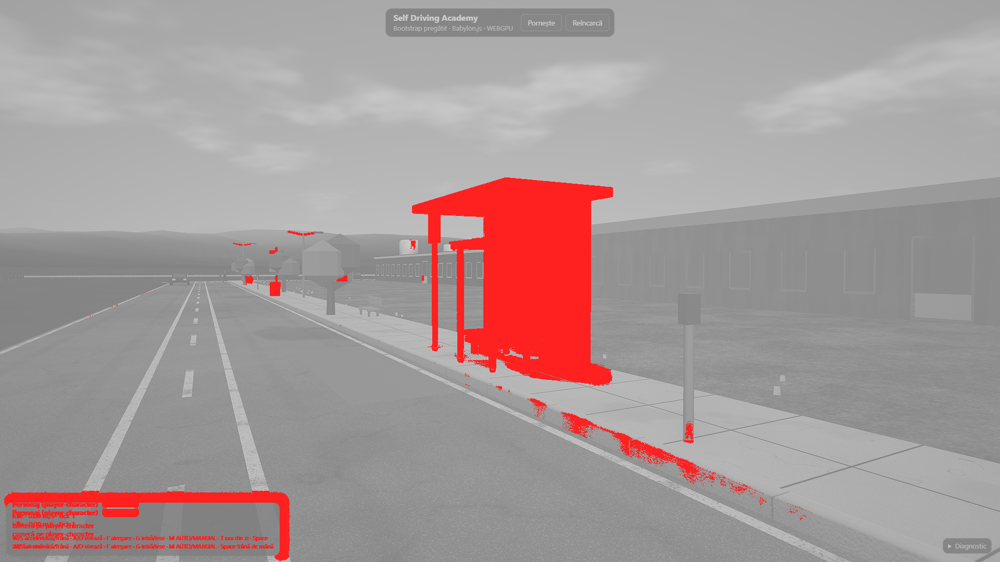
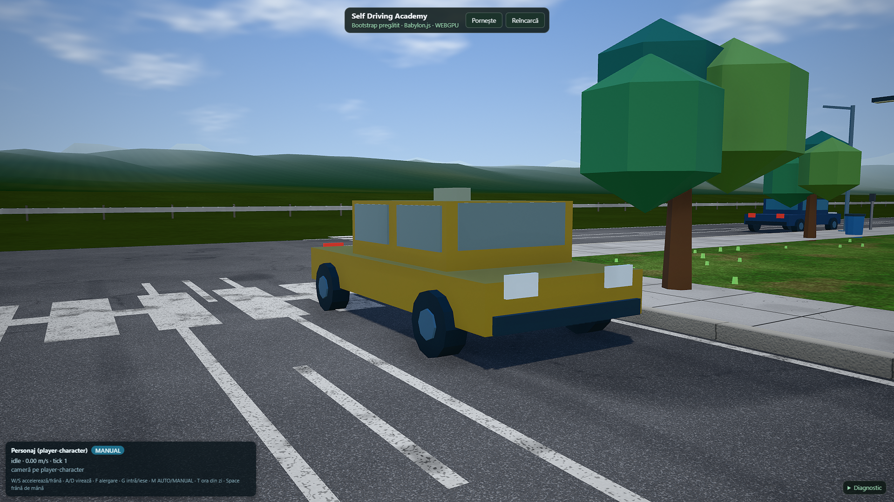
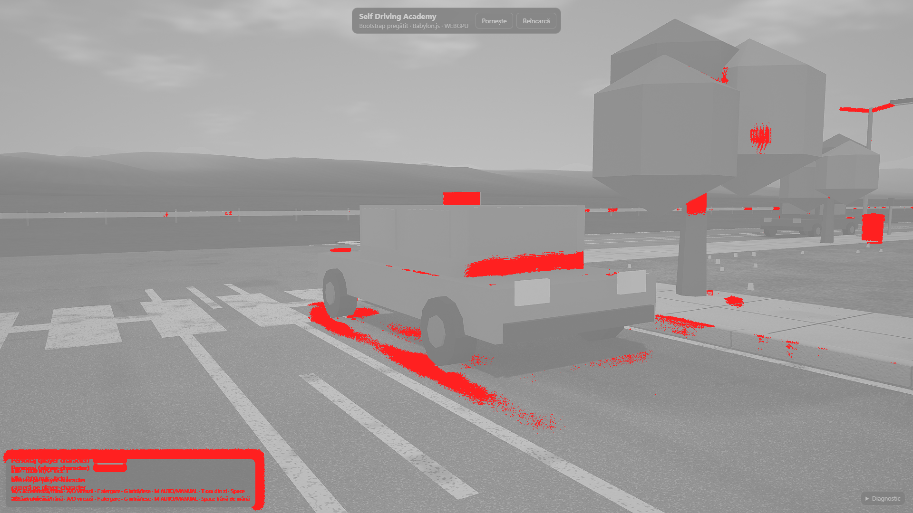